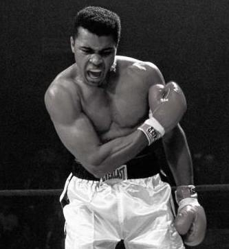
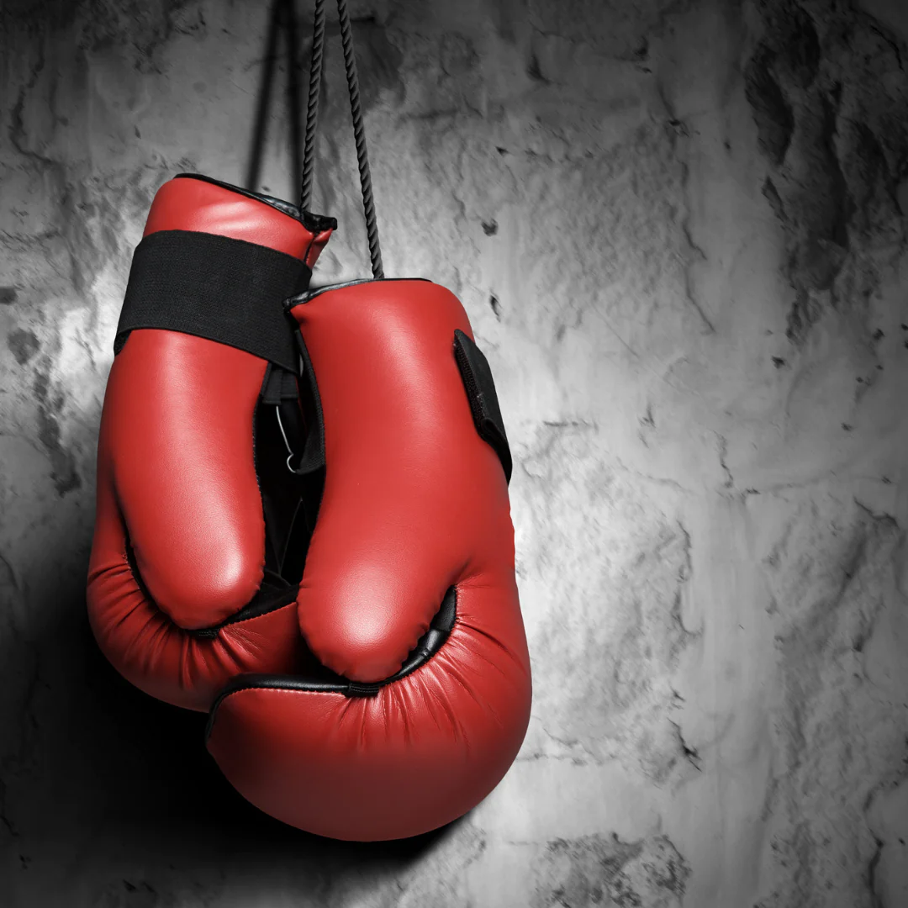

Regeln und Sicherheitsmaßnahmen
Zurück zur Hauptseite


Boxen ist ein Kampfsport, der auf bestimmte Regeln und Sicherheitsmaßnahmen basiert. Hier sind einige wichtige Aspekte:
- Ring: Der Kampf findet in einem Ring statt, der von Seilen umgeben ist.
- Gewichtsklassen: Boxer werden nach Gewichtsklassen eingeteilt, um faire Kämpfe zu ermöglichen.
- Boxhandschuhe: Boxer tragen gepolsterte Handschuhe, um Verletzungen zu reduzieren.
- Runden: Ein Boxkampf besteht aus mehreren Runden, normalerweise zwischen 3 und 12 Runden.
- Regelwerk: Es gibt spezifische Regeln bezüglich Schlägen, Verteidigung, Ringverhalten und Fouls.
- Ringrichter: Ein Ringrichter überwacht den Kampf und sorgt für die Einhaltung der Regeln.
- Sicherheitsausrüstung: Neben den Boxhandschuhen können auch Mundschutz und Kopfschutz verwendet werden, um zusätzlichen Schutz zu bieten.